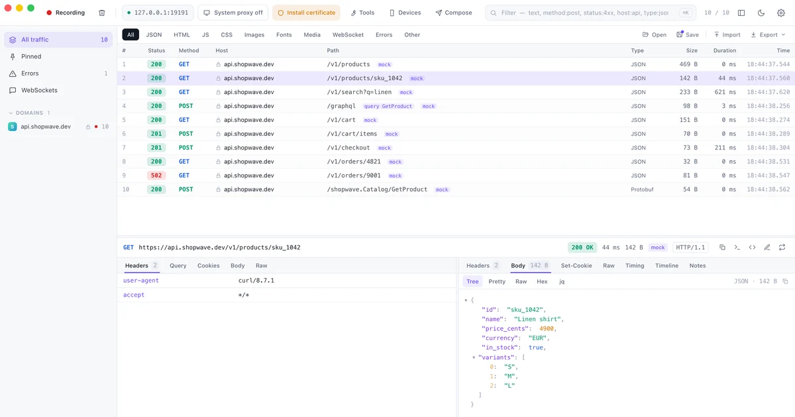
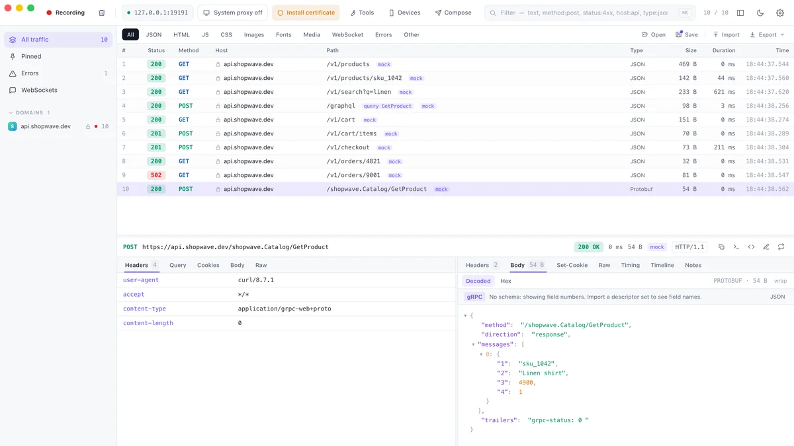
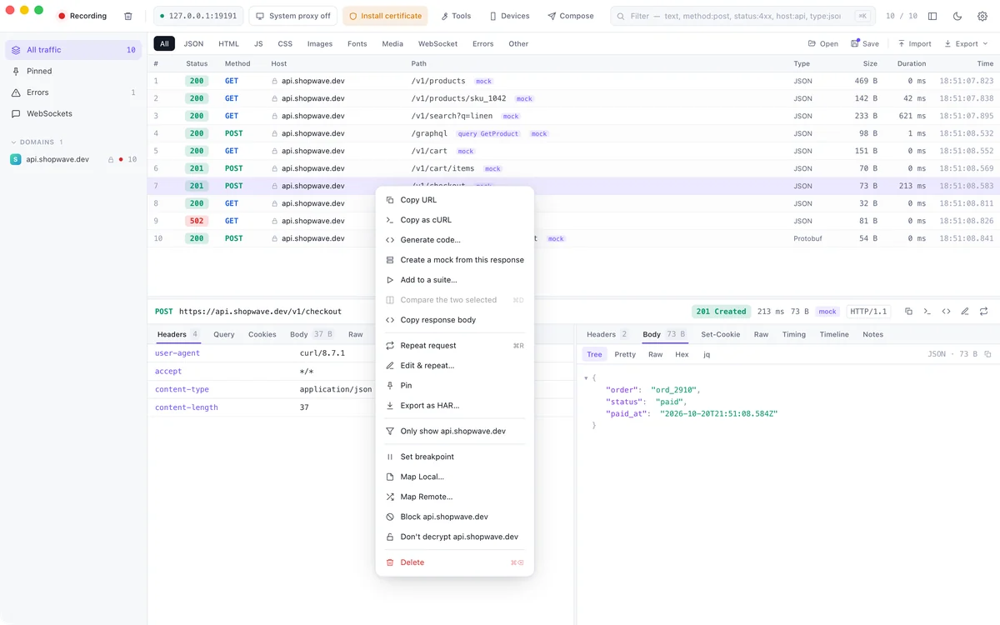
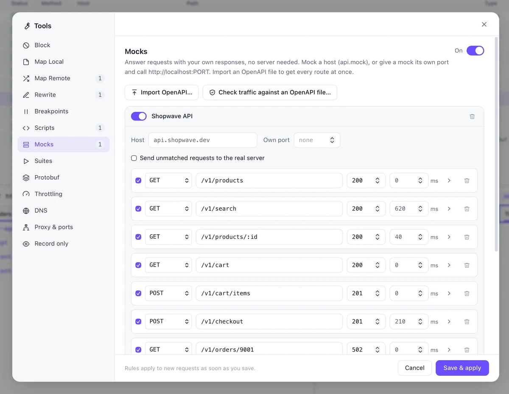
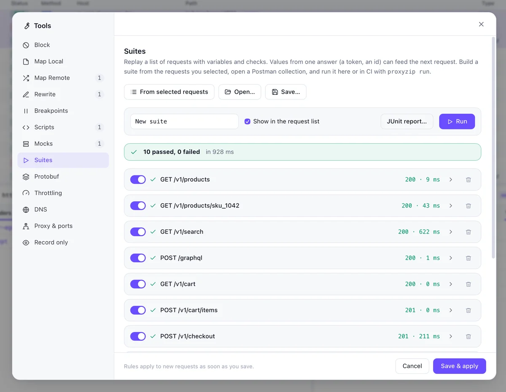
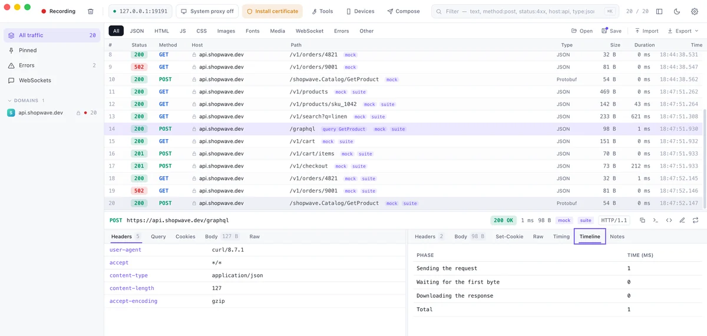
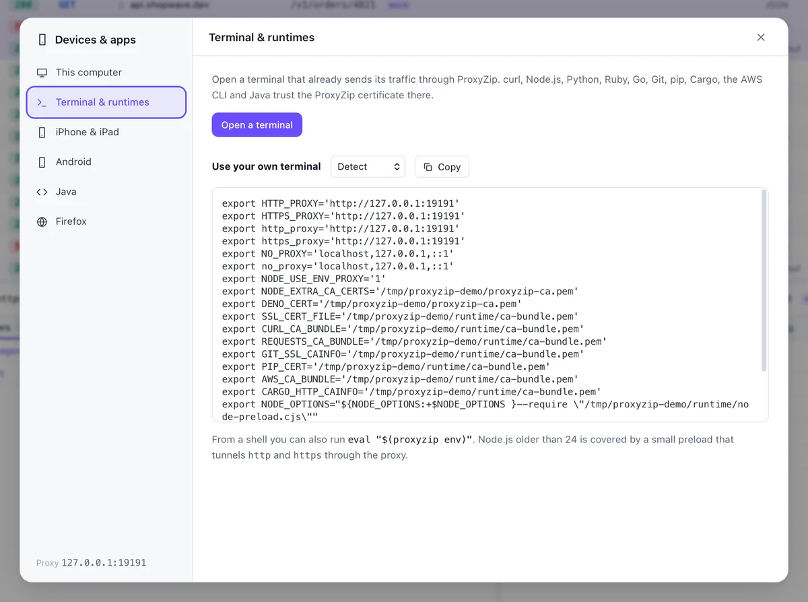
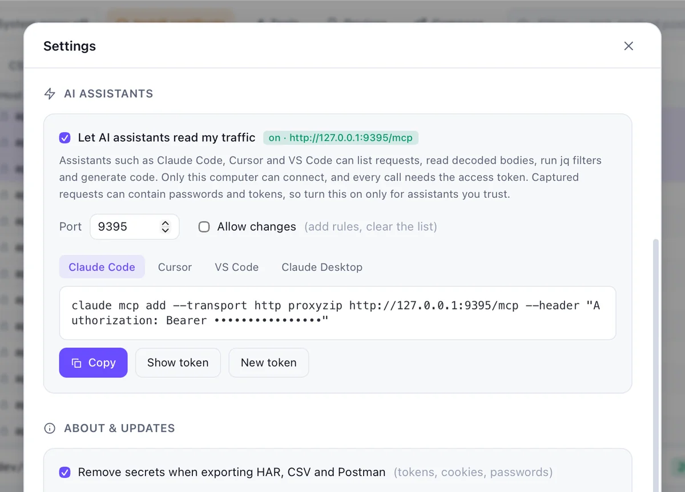

HTTP & HTTPS debugging proxy
See every request your app makes.
Capture HTTPS, pause a request and edit it, answer with a mock, replay a test suite. One small native app, and a command line for CI.
brew install --cask luispeixoto/proxyzip/proxyzip

Three steps, then forget it is there.
Trust the certificate
ProxyZip makes a certificate authority on your machine. The key stays on your disk.
proxyzip ca installSend traffic through it
Switch on the system proxy in the app, or set the variables for one terminal.
eval "$(proxyzip env)"
curl https://api.example.comUse your app as usual
Every request shows up as it finishes: headers, bodies, timings, TLS details.
200 GET api.example.com/v1/me 412BEverything you do with traffic, in one place.
Inspect
Read a response the way you would read code.
- JSON as a tree, with
jqfilters and a diff between any two requests - Protobuf, gRPC and gRPC-Web decoded without a schema
- GraphQL operations named in the list
- Copy as cURL, or generate code in 14 languages

Change
Pause a request, change the JSON, send it on.
- Breakpoints on any request or response
- Map Local and Map Remote, for files and other hosts
- Rewrite headers, bodies and status codes by rule
- Throttle to 3G, or block a host entirely

Mock & test
Build against an API that does not exist yet.
- Mock servers with routes, delays, errors and a template language
- Import an OpenAPI file, validate real traffic against it
- Turn captured requests into a replay suite with assertions
- Run suites headless in CI and read the JUnit report

Run suites
Select ten requests. Make them a test.
- Add any selection to a suite with one click
- Assert on status and body
- Switch environments, pass values between steps with jq
- Import a Postman collection

Script & extend
Small scripts, in a sandbox.
- JavaScript hooks on requests and responses, with a test run in the editor
- Plugins add viewers, rules and tabs to the inspector
- QuickJS sandbox: no file, network or process access
- A verified plugin catalog

Devices
Phones, emulators and your terminal.
- QR code and address for a phone on the same Wi-Fi
- Install the CA on an Android emulator or iOS simulator
- Ready-made variables for Node, Python, Go, Java and more
- SOCKS5 and reverse proxy listeners

AI assistants
Let your assistant read the traffic.
- Built-in MCP server, local only, behind a token
- Secrets are redacted unless you say otherwise
- Read-only by default; changes are opt-in
- Works with any MCP client

The same engine, without a window.
$ proxyzip start --port 19191 --rules rules.json
⚡ ProxyZip listening on http://127.0.0.1:19191
Download on devices: http://proxyzip.cert (through the proxy)
200 GET https://api.shopwave.dev/v1/products 469B 1ms [mock]
200 GET https://api.shopwave.dev/v1/products/sku_1042 142B 70ms [mock]
200 GET https://api.shopwave.dev/v1/orders/ord_9 33B 0ms [mock]
$ proxyzip run checkout.pzsuite --env staging --junit report.xml
$ proxyzip validate api.yaml capture.pzsession
$ proxyzip mock petstore.yaml --port 4010 --delay 200startRun the proxy and print each requestrunExecute a replay suite, exit 1 on failurevalidateCheck traffic against an OpenAPI filemockServe OpenAPI as a mock APIexportHAR, CSV, Postman or session filescodeGenerate code for a captured requestenvVariables for a terminal or runtime
You can check every claim here.
Your keys stay with you
The certificate authority is generated on your machine. Its private key is never uploaded, and you can exclude any host from decryption.
How certificates workNo account, no telemetry
Nothing to sign up for and nothing phoning home. The only extra request is an optional, signed update check.
Security policyMIT, in Rust
The engine is Rust on tokio, hyper and rustls. The app is Tauri and Svelte. Read it, fork it, ship it.
LicenseInstall ProxyZip 0.5.0.
Windows
Windows 10 and 11, 64-bit
ProxyZip_0.5.0_x64-setup.exeInstaller ProxyZip_0.5.0_x64_en-US.msiMSIHomebrew
brew install --cask luispeixoto/proxyzip/proxyzipScoop
scoop bucket add proxyzip https://github.com/LuisPeixoto/scoop-proxyzipCargo (CLI)
cargo install --git https://github.com/LuisPeixoto/ProxyZip proxyzip-cliPrebuilt command-line archives for macOS, Linux and Windows are on the release page, with a SHA256SUMS file. See distribution for signing and package managers.
Frequently asked.
Is ProxyZip free?
Yes. It is MIT licensed. There is no account, no paid tier and no telemetry.
Can it inspect HTTPS traffic?
Yes. ProxyZip creates a local certificate authority on your machine. Once you trust it, the proxy can decrypt HTTPS from apps that use the system certificate store, and you can exclude hosts you never want decrypted.
Does my traffic leave my computer?
No. Captured traffic stays on your machine and the CA private key never leaves your disk. The only network calls ProxyZip makes are the ones you proxy and an optional update check.
Can I debug an iPhone or Android phone?
Yes. Point the phone's Wi-Fi proxy at your computer and install the certificate from http://proxyzip.cert. The Devices window shows the address and a QR code. See mobile debugging.
What is the difference between the app and the command line tool?
They run the same engine. The app adds the interface, breakpoints and plugins. The proxyzip command is for servers and CI: it captures, exports, serves OpenAPI mocks, validates traffic and runs replay suites with JUnit output.
Does it support HTTP/3?
HTTP/1.1 and HTTP/2 are supported. HTTP/3 towards servers is available as an experimental option. See HTTP/3.
Can I use it in CI?
Yes. proxyzip run executes a .pzsuite file, exits non-zero on failure and can write a JUnit report. proxyzip validate checks captured traffic against an OpenAPI file.